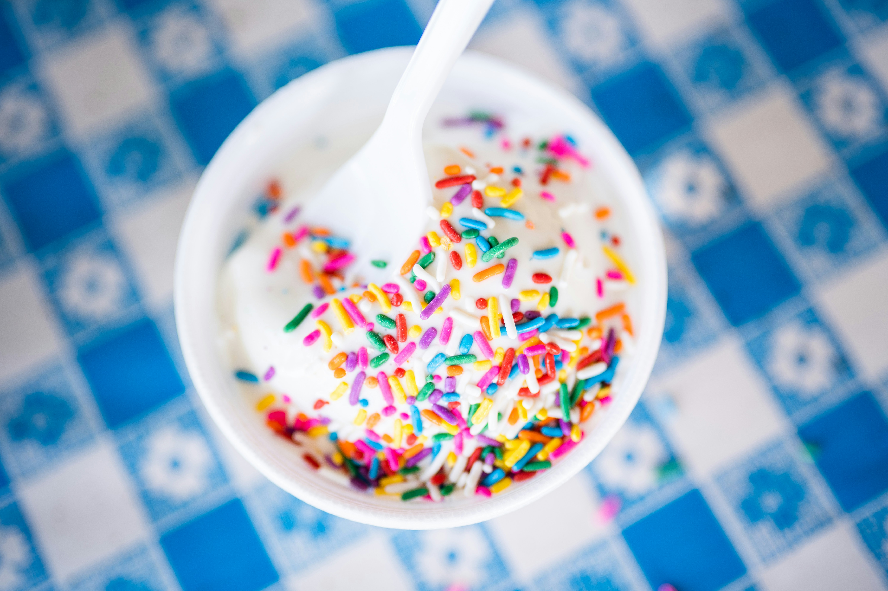

Traditional German Quarkspeise

Ingredients
- soy curd, full fat if available (my favorite is from Sojade)
- lemon juice
- sugar
- sprinkles to your liking (I recommend dark chocolate sprinkles)
Steps
- Add lemon juice to the curd until it has a yoghurt-y, creamy texture.
- Mix in the sugar to taste, to balance out sourness of the lemon juice.
- Add (preferrably) dark chocolate sprinkles as topping.
Back to Home